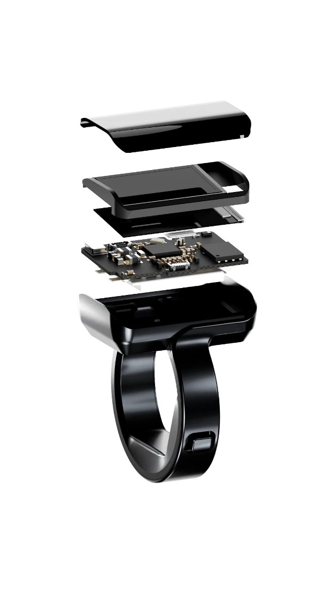
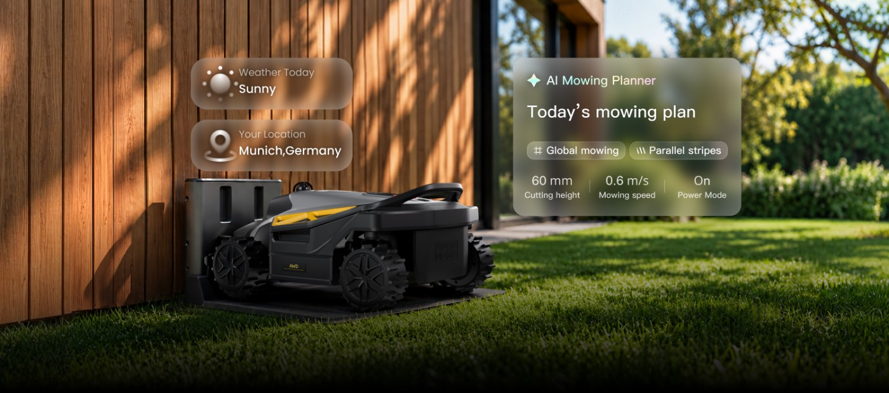
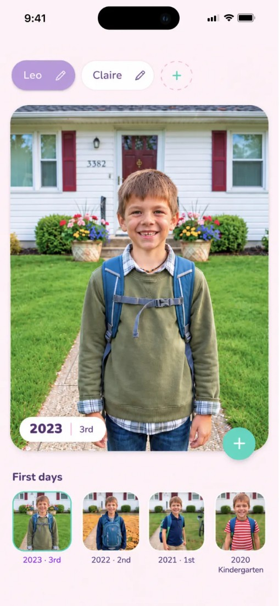
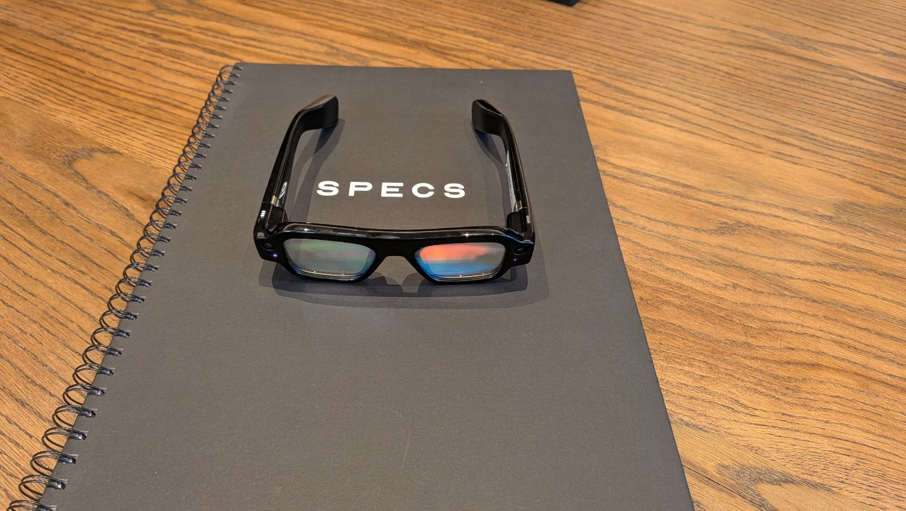
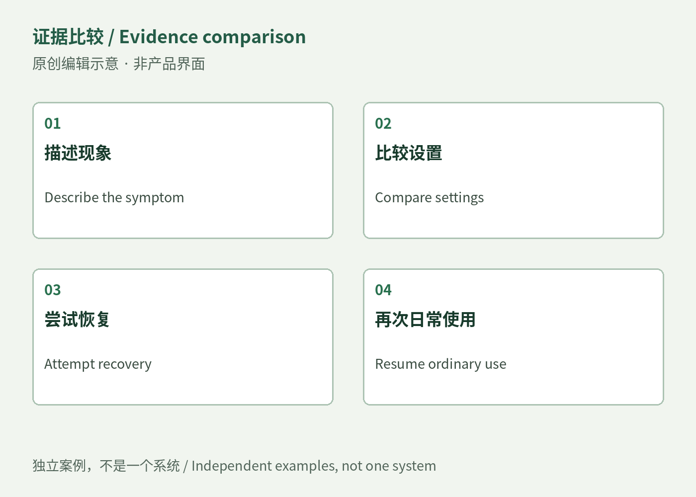

AI PRODUCT WEEKLY / NOV 2–8, 2026
This week: the next edit, the next repair Editable files, ring approvals and robot maintenance; recovery boundaries, owner troubleshooting, consulting briefs and the responsibilities behind design roles.
November 2–8, 2026 · Complete calendar week
Explore this week → Official Affinity iPad motion-blur correction interface with strength control and split preview; vendor example, not an editorial test. ↗ Provenance AI PRODUCT WEEKLY / NOV 2–8, 2026 Nov 2 00:00–Nov 9 00:00 · Toronto
Products, observations and opportunities Editable objects Local edits after generation can reduce the next round of rework.
[S05] Recovery and maintenance Stale state, worn parts and downtime need an explicit recovery owner.
[S35] Business and work An offer or vacancy is not a sale, growth measure or promise of flexible hours.
[S48] 01–06 07–12 13–18 19–20
AI PRODUCT WEEKLY / NOV 2–8, 2026 Official product and developer documentation · 2026-11-02 · Weekly highlight
Affinity keeps the sketch, image and layout in one editable file Official Affinity iPad motion-blur correction interface with strength control and split preview; vendor example, not an editorial test. ↗ Provenance An iPad designer can move between Sketch, Vector, Pixel and Layout while working on a poster or booklet.
Draw with Apple Pencil, refine nodes and masks, then lay out and export the same .af file. Canva AI Studio needs a premium plan.
The November 2 release brings the unified document to touch editing. Local corrections can remain separate from regeneration.
Core tools are free with a Canva account; some desktop features and complex imports remain limited.
Takeaway Test text, masks and export on a real deliverable before replacing a familiar workflow.
Read in depth → AI PRODUCT WEEKLY / NOV 2–8, 2026 Consumer hardware / preorder · 2026-11-05 · Weekly highlight
Aina makes approval a thumb gesture; the pending action still needs context 
Aina’s supplied exploded ring view, not an independent teardown ↗ Provenance The preorder ring places iPhone and Mac reminders and agent actions on an OLED display.
Read one Cue and flick upward to approve. Hold a button for voice; gestures also control media and Mac apps.
The November 5 introduction proposes a dedicated approval surface; delivery is described as early 2027.
Requires iOS 18 and macOS 15 or later. Local learning does not mean all inference is offline; preorder terms matter.
Takeaway Suggested, executing and completed must be distinguishable; fewer phone pickups do not offset a mistaken approval.
Read in depth → AI PRODUCT WEEKLY / NOV 2–8, 2026 Consumer robotics · manufacturer product announcement · 2026-11-03T09:30:00Z · Weekly highlight
TOMO adds sharpening to docking, making maintenance part of the mowing task 
Official Pudu product render with an illustrated mowing-plan overlay; not an app screenshot or our hands-on test. ↗ Provenance TOMO S targets household lawns and sharpens rotary blades at the charging station.
Zones and maps guide mowing, using rotating and solid-state LiDAR, vision and network RTK.
The November 3 announcement adds SharpLoop maintenance, with sales planned for early spring 2027.
Pricing, regions and service terms remain incomplete; laboratory blade comparisons are not a maintenance guarantee.
Takeaway Evaluate a season of sharpening, cleaning, rescues and edge trimming, not one successful cut.
Read in depth → AI PRODUCT WEEKLY / NOV 2–8, 2026 Product / official launch · 2026-11-05T13:25:00Z · Weekly highlight
Playful makes small personal apps shareable, with someone still responsible for upkeep 
Vendor gallery: First Days family timeline example ↗ Provenance Describe a family game, activity tool or personal tracker, then revise it through conversation.
The builder asks about use, generates a web app, and lets its maker test, revise and share it.
The November 5 launch bundles hosting and storage into a creation flow intended for non-programmers.
Official examples and a media trial show possible uses, not household retention or willingness to pay.
Takeaway The second use matters: can people find it, change it correctly and preserve its data?
Read in depth → AI PRODUCT WEEKLY / NOV 2–8, 2026 Hardware / independent hands-on · 2026-11-07 · Weekly highlight
Snap Specs puts a document keyboard in view; a demo does not settle a working day 
Snap Specs photographed during TechRadar’s hands-on ↗ Provenance A November 7 hands-on account shows Google Docs, a browser and an in-view keyboard, with Bluetooth keyboard support.
Hand input, voice, capture and maps share the glasses; the reported trial was limited.
The new evidence is a workplace-oriented trial, not a first launch or enterprise deployment result.
Price, preorder terms, comfort, battery use, bystander privacy and long-form input need separate checks.
Takeaway Compare one away-from-desk task and its errors; opening a document does not establish productivity.
Read in depth → AI PRODUCT WEEKLY / NOV 2–8, 2026 Paper / robotics research system · 2026-11-04T16:46:03Z · Weekly highlight
PyRUA-REAL saves physical trials as programs, with contact-rich work still needing help Authors’ recorded scenes for eight physical robot tasks; not commercial deployment ↗ Provenance The research has coding agents execute, inspect and revise robot programs, retaining experience for later tasks.
Images, depth and gripper records help diagnose failures; retained skills can run without an online agent.
The November 4 paper studies eight physical and 42 simulated tasks; their results are distinct.
Cable insertion still needs online help; feedback errors and human assistance affect the resulting skill.
Takeaway Before deployment, test new arrangements and failure cases instead of replaying the first success.
Read in depth → AI PRODUCT WEEKLY / NOV 2–8, 2026 Product / official update · 2026-11-06 · Weekly highlight
Perplexity separates standing work from queued instructions Official role-permission UI for Computer, Personal Computer and effort settings ↗ Provenance Teammates retains standing responsibilities; Computer can hold follow-ups until the current turn ends.
Set a task, connect material and review results; edit, delete or release a queued instruction.
The November 6 release also adds local Mac execution, a distinct mode from cloud Teammates.
Role effort and speed limits do not replace data permissions; preview access and compute use still matter.
Takeaway Specify what a recurring task must deliver so a repeated job does not simply repeat a mistake.
Read in depth → AI PRODUCT WEEKLY / NOV 2–8, 2026 Observation / unvalidated judgment · 2026-11-02–08 · Usage observation
Recovery controls need a scope, and stale approvals need a rejection Original editorial comparison, not a product interface or an implemented integration. ↗ Provenance Notion, LangGraph and DeepAgents address rollback, stale interrupt answers and summary boundaries.
Preview the impact before writing; reject an outdated request and show the current state.
Distinct changes on November 3, 5 and 6 form an emerging signal, without a comparable multiweek growth baseline.
Client compatibility, history retention and page hierarchy retain separate limits.
Takeaway Try duplicate clicks, stale tabs and partial rollback to see whether people understand what changed.
Read in depth → AI PRODUCT WEEKLY / NOV 2–8, 2026 Observation / unvalidated judgment · 2026-11-02–08 · Usage observation
An editable project can reduce the cost of the second pass Original editorial comparison, not a product interface or an implemented integration. ↗ Provenance Affinity, Edits and Illustrator hand work back as documents, timelines and vector objects.
Provide material or a brief, then correct one object in the result instead of regenerating everything.
Three organizations show related handoffs on November 2, 4 and 5; user migration is unmeasured.
Flattened imports, timeline interpretation and small-size icon cleanup remain human work.
Takeaway Compare second-pass revision and delivery repair, not only the first preview.
Read in depth → AI PRODUCT WEEKLY / NOV 2–8, 2026 Observation / unvalidated judgment · 2026-11-02–08 · Usage observation
Automation still needs someone to clean, replace and recover Original editorial comparison, not a product interface or an implemented integration. ↗ Provenance TOMO sharpening, Stretch modular service and the MOVA ranking withdrawal expose different maintenance questions.
After the task, account for downtime, cleaning, diagnosis, parts and the next use.
This week’s home and warehouse cases support ownership-cost comparison, not a shared failure rate.
Vendor repair times, small owner samples and preorder promises have different evidential limits.
Takeaway Include recovery responsibility and parts availability alongside peak speed.
Read in depth → AI PRODUCT WEEKLY / NOV 2–8, 2026 Observation / unvalidated judgment · 2026-11-02–08 · Usage observation
After buying automatic cleaning, owners still teach each other how to make it work 
Original editorial comparison, not a product interface or an implemented integration. ↗ Provenance Two MOVA threads include dry pads, attachment trouble and maintenance habits, alongside satisfied owners.
Documenting a symptom, comparing settings and contacting support become part of ownership.
Historical threads rechecked November 9; relative dates do not establish new complaints this week.
Only visible Best-sorted comments were read; the threads are not failure or return rates.
Takeaway Community value can be troubleshooting and recognition, without demand for another paid tool.
Read in depth → AI PRODUCT WEEKLY / NOV 2–8, 2026 Observation / unvalidated judgment · 2026-11-02–08 · Demand hypothesis
Test a support evidence packet before building another support platform Original editorial comparison, not a product interface or an implemented integration. ↗ Provenance Potential users are owners and service teams repeatedly reconstructing a device problem.
Combine model, firmware, settings, a short clip and reproduction steps in an editable ticket attachment.
Threads show handoff work; no buyer budget, paid pilot or repeat purchase is verified.
Native support and free communities may suffice; the packet should not diagnose or decide warranty outcomes.
Takeaway Manually organize permitted examples first; stop if follow-up questions or buyer economics do not improve.
Read in depth → AI PRODUCT WEEKLY / NOV 2–8, 2026 Observation / unvalidated judgment · 2026-11-02–08 · Demand hypothesis
APF’s procurement asks people to find content; diagnose navigation before proposing AI search Original editorial comparison, not a product interface or an implemented integration. ↗ Provenance APF seeks a website UX review and redesign recommendations: consulting procurement, not an employee role.
Start with retrieval tasks and inspect taxonomy, filters, bilingual content and accessibility.
Issued October 22, rechecked November 9; proposals close November 23 at 17:00 PT, after the question deadline.
The CAD 30,000 cap includes taxes and costs; it is a budget signal, not realized revenue.
Takeaway If native information architecture solves the task, an additional generated layer may be unnecessary.
Read in depth → AI PRODUCT WEEKLY / NOV 2–8, 2026 Observation / unvalidated judgment · 2026-11-02–08 · Demand hypothesis
A design service sells delivery responsibility; an intake portal sells workflow Original editorial comparison, not a product interface or an implemented integration. ↗ Provenance Designpixil and Content Snare expose different charging units: service capacity and software request workflows.
One delivers product-design work in Figma; the other organizes collection, reminders and approval.
Seller pages rechecked November 9; testimonials and prices do not establish revenue or retention.
Designpixil starts at $4,917/month, currency unstated; Content Snare Basic is USD 35/month billed annually.
Takeaway Separate labor, platform cost and rework before pricing a bounded service.
Read in depth → AI PRODUCT WEEKLY / NOV 2–8, 2026 Employer roles / consulting procurement · 2026-11-09 supplementary check · Jobs checked November 9
Remote employment: operations, AI and experiments Takeaway Original links and restrictions are in the detail; no applications, contacts or hiring outcomes are claimed.
Read in depth → AI PRODUCT WEEKLY / NOV 2–8, 2026 Employer roles / consulting procurement · 2026-11-09 supplementary check · Jobs checked November 9
Remote employment: product delivery and growth Takeaway Original links and restrictions are in the detail; no applications, contacts or hiring outcomes are claimed.
Read in depth → AI PRODUCT WEEKLY / NOV 2–8, 2026 Employer roles / consulting procurement · 2026-11-09 supplementary check · Jobs checked November 9
Contract and part-time: design may include production code Takeaway Original links and restrictions are in the detail; no applications, contacts or hiring outcomes are claimed.
Read in depth → AI PRODUCT WEEKLY / NOV 2–8, 2026 Employer roles / consulting procurement · 2026-11-09 supplementary check · Jobs checked November 9
Contract and part-time: check capacity and time zones Takeaway Original links and restrictions are in the detail; no applications, contacts or hiring outcomes are claimed.
Read in depth → AI PRODUCT WEEKLY / NOV 2–8, 2026 Employer roles / consulting procurement · 2026-11-09 supplementary check · Jobs checked November 9
Hybrid work, eligibility limits and a consulting RFP Takeaway Original links and restrictions are in the detail; no applications, contacts or hiring outcomes are claimed.
Read in depth → AI PRODUCT WEEKLY / NOV 2–8, 2026 Job-sample analysis · 2026-11-09 sample · Sample observation, not market growth
Read the delivery responsibility behind the AI label AI control: confidence, recovery, takeover Delivery: prototype, handoff, production Evidence: research, experiments, shipped work Terms: location, time zone, capacity 17 entries across 16 organizations: employees, contracts, part-time work and one RFP.
Read eligibility, capacity and delivery responsibility before labels such as AI, remote or senior.
15 existing records rechecked and 2 newly discovered for this issue, not 17 new postings this week.
Babylist was read through indexed original-page text without testing its current form; other terms remain undisclosed.
Takeaway The sample supports skill comparisons, not hiring growth, placement rates or schedule-freedom promises.
Read in depth →